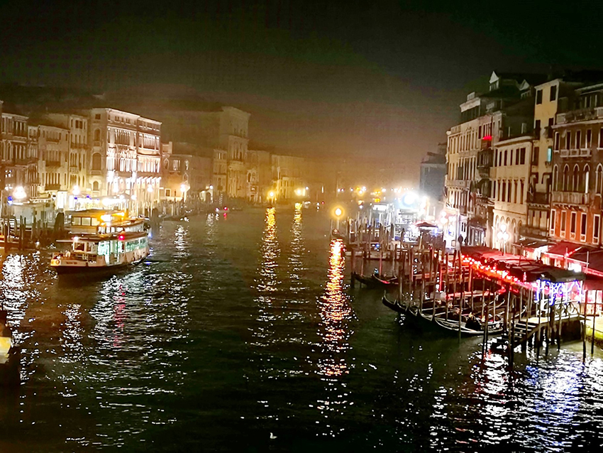

威尼斯是義大利東北部著名的旅遊與工業城市，得天獨厚的潟湖環境及絕佳的地理位置使它在13到17世紀末一直都是兵家必爭之地，各國文化的交融使威尼斯成為歐洲最重要的戰略、商業、和藝術中心，漫漫歷史洪流遺留下來的王國及城市古蹟，使威尼斯在近年被評為世界上最美麗的城市。
在威尼斯島沒有所謂的車道，聖塔露西亞車站是威尼斯唯一的鐵路車站，沒有車道交通怎麼運行呢？取而代之的是四通八達的水道，潟湖上的118座群島約由150條水道交織而成。構成威尼斯的島嶼約擁有400座橋樑。所以公共汽車、汽車在威尼斯都成為稀有的物品。「貢多拉」是威尼斯最具代表性的傳統划船，船身全漆黑色，由一船夫站在船尾搖槳，搭配浪漫動人情歌演唱，開在水道上，真的是很拉風，難怪是傳統貴族們主要的交通工具，而現今大多是觀光客為了體驗文化而搭乘的，在地的威尼斯人通常會使用較為經濟的水上巴士穿行市內主要水道和威尼斯的其他小島，這種與海共生、順應大自然的概念，真是非常呼應現在最火紅的環保潮流。
我在前幾年的一個冬天前往威尼斯觀光，便對威尼斯人山人海的觀光人潮瞠目結舌，畢竟頂著「世界水都」美譽，威尼斯每年湧入的觀光客比台灣總人口2,500萬人還多，旅館價格高昂、一位難求是常態，雙年展與影展期間尤甚，預估到2025年，每年觀光客人數會飆漲到3,800萬，遠超過這座城市的負荷量。也難怪國家地理雜誌寫出了「威尼斯會先毀於人潮還是海潮？」這個聳動的文章標題，我走在威尼斯的街頭，到處都是觀光客，都不知道是來看人潮還是看古蹟，整座島宛若迪士尼樂園一樣，島上唯一的大眾交通工具—水上巴士，每班船至少都要排隊超過半小時才上得去，雖然當地居民有優先通道，但上了船，空間還是沒變，仍然要跟遊客一起擠在狹小的空間裡。有限的交通工具及過度觀光的後果就是：擠壓了當地威尼斯人的生活空間及生活品質。試想看看，每天出門買菜都要搞得像擠上難民船一樣；當觀光客大量湧入，居住需求高漲時，但對在地居民而言，這意味著他們要面對年年高漲的居住支出；過度傾向觀光造成城內工作機會大半都是旅遊服務業，許多志不在此的人難有發揮空間；此外，滿足日常需求的商店紛紛改成專門服務觀光客的禮品店，商品價高且不符合日常生活所需，也難怪許多威尼斯人乾脆遠走他鄉，找個更為寧靜、親民的地方居住，留下越來越空洞的城市，還有「威尼斯正漸漸變成龐貝，一個人們造訪、並讚嘆其壯麗的地方，不過沒有人居住在那。」的說法，畢竟一個沒有在地人口的城市，就算再怎麼令人驚艷，終究只是失去生命的化石標本，徒具華美的空殼，沒有生命力跟溫度。
威尼斯以觀光業為重要收入來源。幾乎從未消失的人潮、源源不絕的金流、最熱鬧繁華流行的商店街區等，都讓威尼斯看起來是個光鮮亮麗的城市，但事情都是一體兩面的，人潮等於錢潮，也等於是龐大的環境壓力，接受永無止盡的觀光客並非不需要付出任何代價，而且這牽涉到的不僅是在地居民的生活品質，還攸關寶貴的在地傳統或歷史文化之存續問題。 當我們在羨慕別人的觀光如此蓬勃發展，卻沒看見他們背後的代價，觀他人審己身，反觀我們自己的家鄉臺灣，觀光太過興盛這是我們不曾擁有的奢侈煩惱，臺灣是亞細亞的孤兒，面對中國強權在經濟及軍事武力上不停的挑釁及打壓，還有在國際上不被承認主權的弱勢地位，我們只有靠自己拼經濟，但我們一直以來自給自足，勤奮的工作，臺灣有制度的政府甚至在國際疫情險峻之際成為最佳的防疫典範，宛如世外桃源一般，不禁佩服臺灣人的智慧與能力，並感恩我們還能一如既往安心的生活。
繁榮的觀光業發展，對威尼斯來說是福也是禍，有得天獨厚的觀光資源讓威尼斯人生活不虞匱乏，但太過依賴觀光業為生，沒有其餘產業可支撐市政經濟，加上受到當前的疫情影響，威尼斯經濟受到的打擊更大了。 近年，更因全球暖化、當地超抽地下水日益嚴重，加上太多巨型郵輪停靠威尼斯，造成波浪侵蝕潟湖城根基，使洪水頻繁發生，聯合國教科文組織發出最後通牒，稱郵輪正給威尼斯的生態系統帶來「不可逆轉的變化」，如果當地政府不採取有效措施，聯合國教科文組織世界遺產委員會將把威尼斯列入《瀕危世界遺產名錄》，目前威尼斯當局是有著手在改善，但效果似乎還是不彰，若你不想錯過威尼斯的風采，還是把握時光動身前往威尼斯一探究竟吧。
 |
|  |